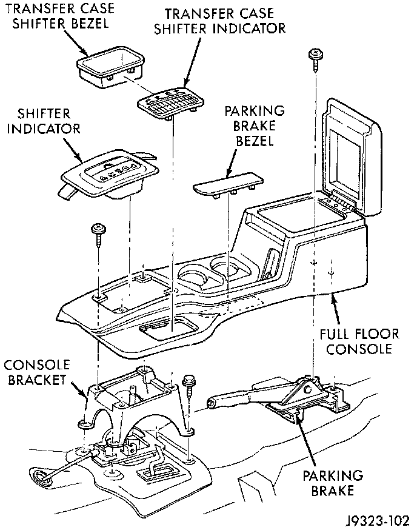
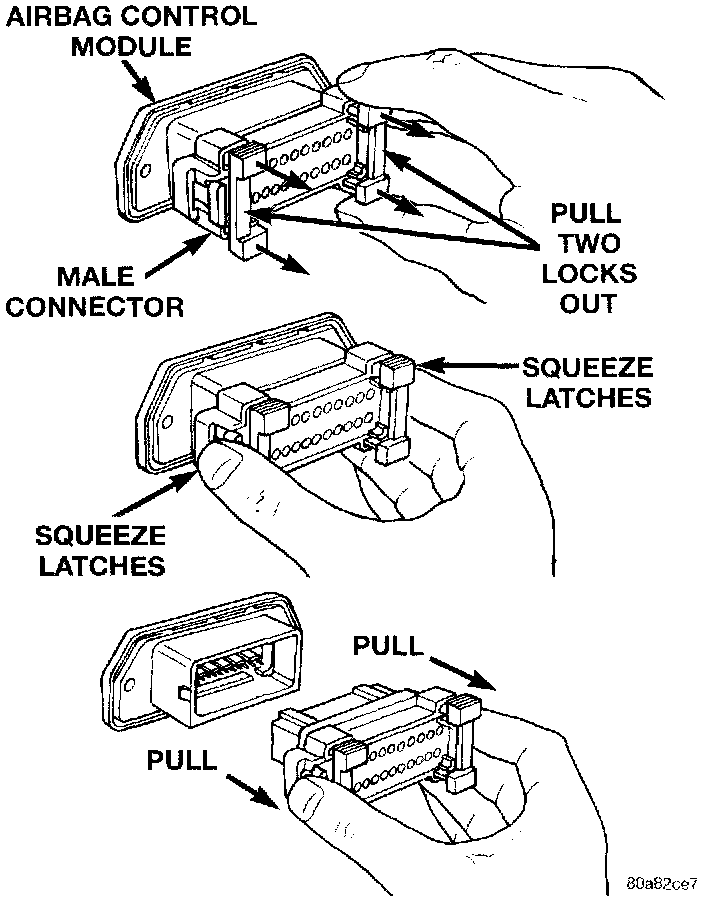
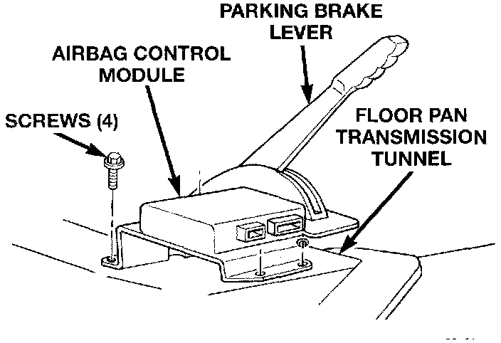

Air Bag Control Module: Service and Repair
WARNING:^ THE AIRBAG CONTROL MODULE CONTAINS THE IMPACT SENSOR, WHICH ENABLES THE SYSTEM TO DEPLOY THE AIRBAG. BEFORE ATTEMPTING TO DIAGNOSE OR SERVICE ANY AIRBAG SYSTEM OR RELATED STEERING WHEEL, STEERING COLUMN, OR INSTRUMENT PANEL COMPONENTS YOU MUST FIRST DISCONNECT AND ISOLATE THE BATTERY NEGATIVE (GROUND) CABLE. THEN WAIT TWO MINUTES FOR THE SYSTEM CAPACITOR TO DISCHARGE BEFORE FURTHER SYSTEM SERVICE. THIS IS THE ONLY SURE WAY TO DISABLE THE AIRBAG SYSTEM. FAILURE TO DO THIS COULD RESULT IN ACCIDENTAL AIRBAG DEPLOYMENT AND POSSIBLE PERSONAL INJURY.
^ NEVER STRIKE OR KICK THE AIRBAG CONTROL MODULE, AS IT CAN DAMAGE THE IMPACT SENSOR OR AFFECT ITS CALIBRATION. IF AN AIRBAG CONTROL MODULE IS ACCIDENTALLY DROPPED DURING SERVICE, THE MODULE MUST BE SCRAPPED AND REPLACED WITH A NEW UNIT.
1. Disconnect and isolate the battery negative cable. If the airbag has not been deployed. wait two minutes for the system capacitor to discharge before further service.
2. If the vehicle is equipped with an automatic transmission. pull the transmission shift lever handle straight up firmly and quickly to remove the handle. If the vehicle is equipped with a manual transmission. remove the shift lever knob by removing the bezel and nut from the top of the knob.

3. Release the automatic transmission shift indicator bezel or the manual transmission shift lever boot. and the transfer case shift indicator bezel by prying between the edge of the bezel or boot and the floor console with a trim stick or other suitable wide flat-bladed tool.
4. Raise the shift indicator bezel(s) far enough from the console to remove the lamp sockets from the bezel(s). then remove the bezel(s) and/or boot from the console.
5. Remove the screws that secure the floor console to the console and parking brake lever mounting brackets.
6. Remove the floor console from the floor pan transmission tunnel.

7. To unplug the airbag control module wire harness connection first pull the two white locks out about .3 mm (0.125 in.) from each side of the connector. Then squeeze the two connector latch tabs between the thumb and forefinger while pulling the connector out from the module.
NOTE: Always remove and replace the airbag control module and its mounting bracket as a unit. Replacement modules include a replacement mounting bracket. Do not transfer the module to another mounting bracket.

8. Remove the four screws that secure the airbag control module mounting bracket to the floor pan transmission tunnel.
9. Remove the airbag control module and mounting bracket as a unit.
10. When installing the airbag control module and mounting bracket, position the unit with the arrow on the module housing pointing forward.
11. Attach the airbag control module to the floor pan transmission tunnel with the four mounting screws. Tighten the mounting screws to 10.7 N.m (95 in. lbs.).
12. Plug in the wire harness connector to the airbag control module. Be certain that the connector latches are fully engaged and that the connector locks are pushed in.
13. Reverse the remaining removal procedures to complete the installation.
14. Do not connect the battery negative cable at this time. See Testing and Inspection/Procedures for the proper procedures.